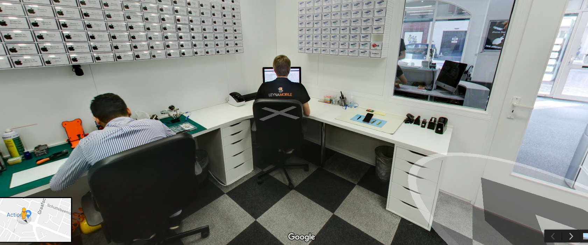
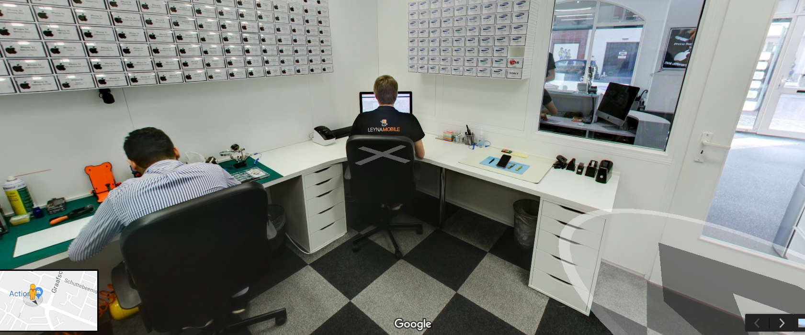

Digital Footprint
Bij de Digital Footprint was het de bedoeling om ervan bewust te worden hoeveel er over je te vinden is op het internet. Iedereen in de klas moest zoveel mogelijk informatie proberen te vinden over een andere leerling. Ik heb op internet gezocht en heb daar plaatjes gevonden van de persoon en ook een LinkedIn profiel. Ik vond deze opdracht wel leuk door alles wat er te vinden was over mensen op het internet. Door maar heel even te zoeken had je al erg veel informatie over iemand gevonden.
Klik om terug te gaan